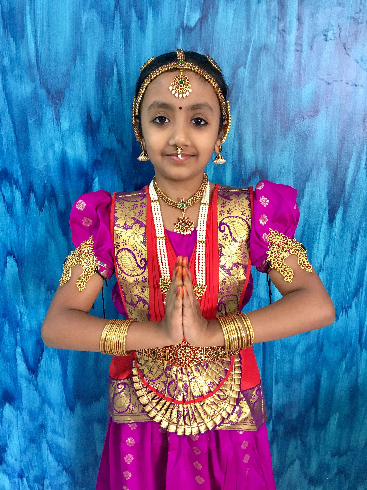
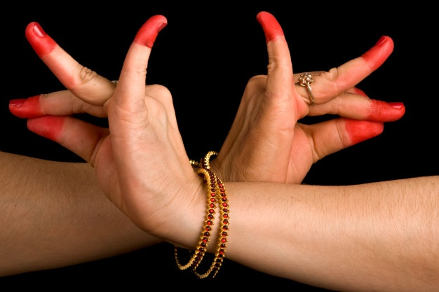
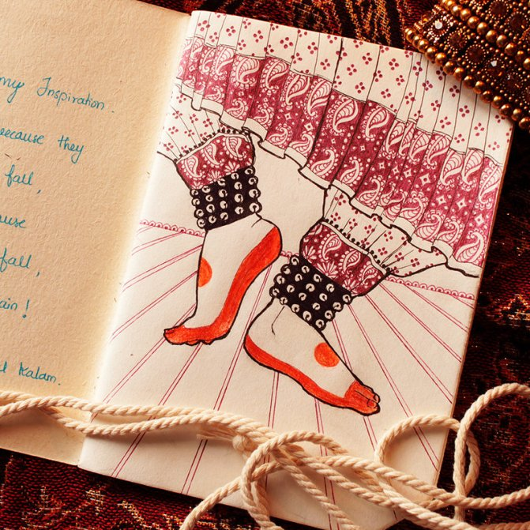
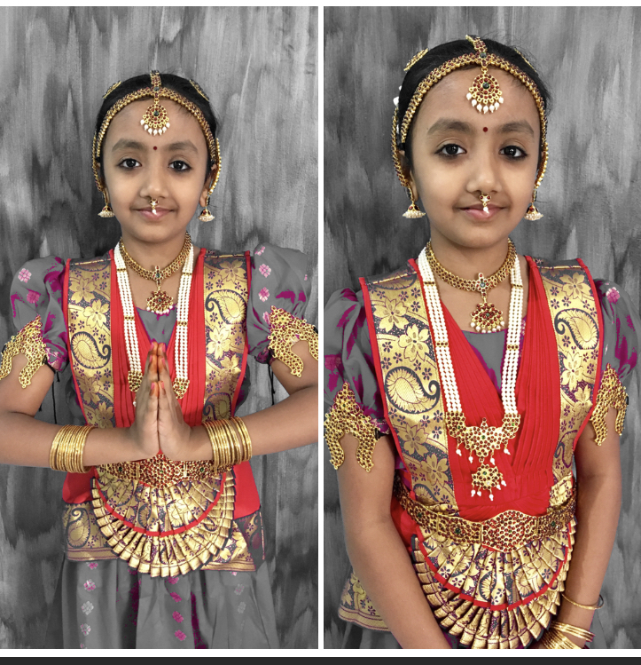
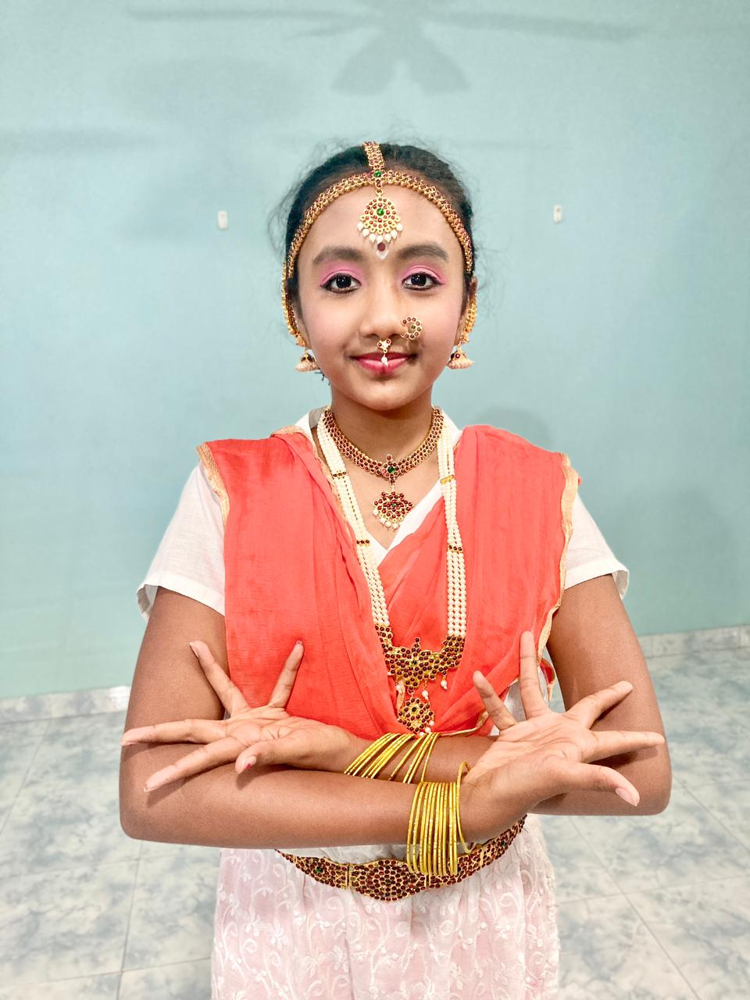

|  |
INTRODUCTION
Hello Everyone,
Welcome to my Website. I am Anvita Sindhur, and I am getting trained in Bharatanatyam . In this website you will get to know about Bharatanatyam and it's important aspects. |
|  |
MUDRASIn Bharatanatyam, approximately fifty-five mudras (hand/finger gestures) are used to clearly communicate specific ideas, events, actions, or creatures in which thirty-two require only one hand, and are classified as 'Asamyukta Hasta', along with twenty-three other primary mudras which require both hands and are classified as 'Samyukta Hasta. |
ADAVUS
Adavus form the basic dance moves in Bharatanatyam.
It the inculcation of the basic combination of movement of various parts of the body which is done according to the 'tala'.
It forms the main component in learning Bharatanatyam. |
 |
|  |
COSTUMEA Bharatanatyam costume is unique and easily identified. Dancers wear saris that are stitched in a very traditional pattern and style. It is very beautiful and colourful. The costume is made out of pure silk saris and looks extremely elegant and regal. |
MAKE-UP & JEWELLERY
Bharatanatyam makeup is done with great precision, ensuring it suits the dance form and also the ambience lighting that highlight the makeup.
Thus, most artists in this field stick to waterproof and smudge resistant makeup that ensure that dancer looks picture perfect at all times during performance. |
 |